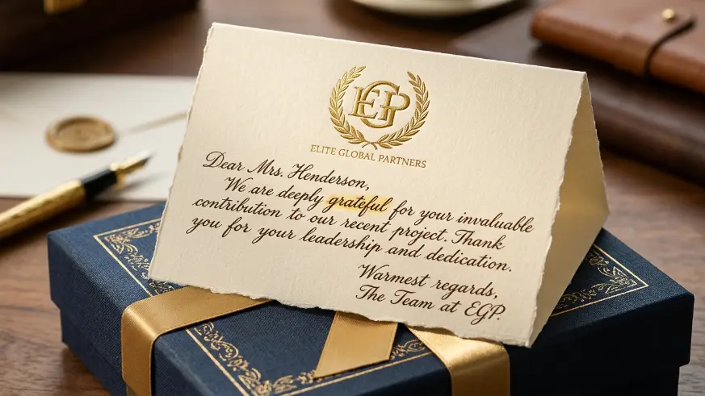
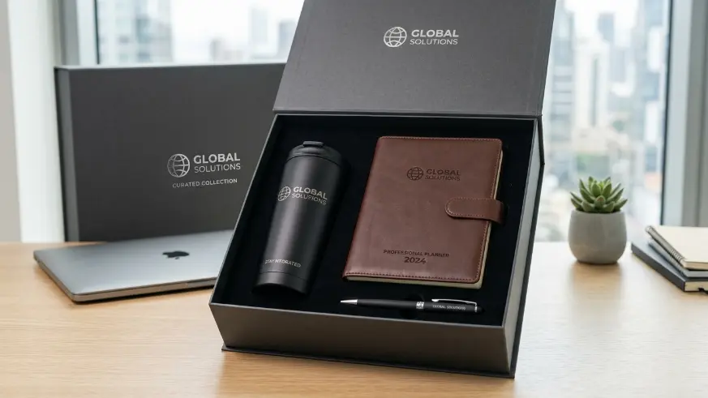

Employee appreciation gift set adalah paket hadiah korporat yang dirancang khusus untuk menunjukkan penghargaan perusahaan atas kontribusi dan kerja keras karyawan.
Souvenir Kantor Jakarta menyediakan employee appreciation gift set yang dapat dikustomisasi sesuai identitas dan nilai perusahaan Anda.
Apa Itu Employee Appreciation Gift Set?
Employee appreciation gift set adalah kumpulan barang yang disusun khusus sebagai hadiah dari perusahaan kepada karyawan, dengan penekanan pada pesan penghargaan atas kontribusi dan kerja keras yang telah diberikan.
Berbeda dengan gift set korporat pada umumnya, employee appreciation gift set lebih menonjolkan sisi emosional dari pemberian hadiah, yaitu rasa dihargai yang ingin disampaikan perusahaan kepada karyawannya.
Laporan tren employee experience 2025 mencatat bahwa lebih dari 70 persen karyawan di lingkungan kerja urban melaporkan merasa lebih dihargai ketika perusahaan memberikan bentuk apresiasi fisik yang dipersonalisasi, dibandingkan apresiasi yang bersifat umum.
Studi lain mengenai workplace recognition 2024 menunjukkan bahwa program apresiasi yang konsisten berkorelasi dengan tingkat kepuasan kerja yang lebih tinggi pada karyawan yang menerimanya.
Employee appreciation gift set dapat diberikan dalam berbagai konteks, mulai dari perayaan Employee Appreciation Day, penghargaan atas kontribusi khusus, hingga ucapan terima kasih rutin dari manajemen.
Bagi perusahaan di Jakarta, memesan Souvenir Kantor Jakarta memudahkan proses personalisasi dan pengiriman secara lebih cepat dan terkoordinasi.
Mengapa Employee Appreciation Gift Set Penting bagi Karyawan?
Employee appreciation gift set penting bagi karyawan karena memberikan bukti nyata bahwa kontribusi mereka diperhatikan dan dihargai oleh perusahaan, bukan hanya melalui kata-kata semata.
Rasa dihargai yang dirasakan karyawan melalui pemberian gift set dapat berdampak pada peningkatan kepuasan kerja dan keterikatan terhadap perusahaan.
Ketika apresiasi disampaikan secara konsisten dan tulus, karyawan cenderung merasa lebih diakui dalam lingkungan kerjanya, yang pada gilirannya dapat memperkuat hubungan jangka panjang antara karyawan dan perusahaan.
Pembahasan lebih rinci mengenai penggunaan gift set untuk mengapresiasi karyawan berprestasi dapat ditemukan pada artikel employee appreciation gift set untuk karyawan berprestasi, yang mengulas penyesuaian gift set dengan tingkat kontribusi karyawan.

Pemberian kartu ucapan dan detail personal memperkuat kesan tulus dalam program apresiasi karyawan.
Bagaimana Memilih Employee Appreciation Gift Set yang Tepat?
Memilih employee appreciation gift set yang tepat dilakukan dengan mempertimbangkan pesan apresiasi yang ingin disampaikan, kualitas barang, dan momen pemberian hadiah kepada karyawan.
Pesan apresiasi yang jelas, baik melalui kartu ucapan maupun label kemasan, menjadi elemen penting yang membedakan employee appreciation gift set dari hadiah korporat biasa.
Selain itu, kualitas barang yang dipilih sebaiknya mencerminkan tingkat penghargaan yang ingin disampaikan, sehingga penerima merasakan kesan yang sesuai dengan konteks apresiasi tersebut.
Uraian lengkap mengenai momen khusus seperti Employee Appreciation Day tersedia pada artikel employee appreciation gift set untuk momen apresiasi tahunan, yang membahas penyesuaian tema gift set dengan momen perayaan tersebut.
Bagaimana Menyampaikan Pesan Apresiasi melalui Gift Set?
Pesan apresiasi dapat disampaikan melalui gift set dengan menambahkan elemen personal seperti kartu ucapan, label bernama, atau catatan singkat yang menjelaskan alasan pemberian hadiah tersebut.
Elemen personal ini membantu memperkuat makna di balik pemberian gift set, sehingga penerima memahami bahwa hadiah tersebut bukan sekadar barang, melainkan bentuk komunikasi penghargaan yang spesifik.
Cara penyampaian pesan yang tepat dapat meningkatkan dampak emosional dari employee appreciation gift set secara signifikan.
Penjelasan lebih mendalam mengenai cara menyusun pesan apresiasi yang efektif dapat dibaca pada artikel cara menyampaikan pesan apresiasi melalui employee appreciation gift set.

Barang-barang premium dan fungsional memberikan nilai guna jangka panjang bagi karyawan penerima.
Apa Perbedaan Employee Appreciation Gift Set dengan Gift Set Korporat Biasa?
Perbedaan utama employee appreciation gift set dengan gift set korporat biasa terletak pada penekanan pesan emosional dan tingkat personalisasi yang disematkan pada setiap paket.
Gift set korporat biasa umumnya berfokus pada fungsi dan branding perusahaan, sedangkan employee appreciation gift set lebih menonjolkan sisi personal dan emosional, seperti pesan ucapan terima kasih yang spesifik terhadap kontribusi karyawan tertentu.
Perbedaan ini memengaruhi cara penyusunan isi, kemasan, dan komunikasi yang menyertai gift set tersebut.
Apa Saja Faktor yang Memengaruhi Kesan Apresiasi pada Gift Set?
Kesan apresiasi pada gift set dipengaruhi oleh ketulusan pesan yang disampaikan, kualitas barang yang dipilih, dan ketepatan waktu pemberian terhadap konteks kontribusi karyawan.
Pesan yang terasa generik atau tidak spesifik cenderung mengurangi dampak emosional dari gift set, meskipun kualitas barangnya premium.
Sebaliknya, pesan yang personal dan relevan dengan kontribusi karyawan dapat memperkuat kesan apresiasi secara signifikan, bahkan dengan komponen gift set yang sederhana.
Kesalahan Umum dalam Menyusun Employee Appreciation Gift Set
Kesalahan umum dalam menyusun employee appreciation gift set meliputi pesan yang terlalu umum, minimnya personalisasi, dan ketidaksesuaian isi gift set dengan konteks apresiasi yang ingin disampaikan.
Beberapa perusahaan cenderung menggunakan template pesan yang sama untuk seluruh karyawan tanpa penyesuaian konteks individu, sehingga kesan apresiasi menjadi kurang bermakna.
Kesalahan lain adalah memilih barang yang kurang relevan dengan kebutuhan karyawan, sehingga gift set berpotensi tidak digunakan secara optimal meskipun bertujuan baik.
Bagaimana Cara Memesan Employee Appreciation Gift Set di Jakarta?
Pemesanan employee appreciation gift set di Jakarta dapat dilakukan melalui layanan Souvenir Kantor Jakarta, yang menyediakan proses konsultasi kebutuhan, personalisasi pesan dan desain, hingga pengiriman langsung ke lokasi kantor.
Proses biasanya diawali dengan diskusi mengenai tujuan apresiasi, jumlah penerima, dan pesan yang ingin disampaikan.
Tim penyedia kemudian membantu menyusun kombinasi barang serta elemen personalisasi sebelum memasuki tahap produksi dan pengiriman.
Jika perusahaan Anda sedang merencanakan program apresiasi karyawan, tim Souvenir Kantor Jakarta siap membantu menyusun employee appreciation gift set yang mencerminkan penghargaan tulus perusahaan Anda.
Hubungi kami sekarang untuk konsultasi dan penawaran employee appreciation gift set.
Kesimpulan
Employee appreciation gift set merupakan alat komunikasi penghargaan yang efektif apabila disusun dengan pesan yang tulus, barang yang relevan, dan waktu pemberian yang tepat.
Perusahaan yang ingin membuat karyawan merasa benar-benar dihargai dapat mulai dengan menentukan konteks apresiasi, menyesuaikan pesan personal, dan bekerja sama dengan penyedia Souvenir Kantor Jakarta yang berpengalaman menangani kebutuhan korporat.
FAQ
Apa itu employee appreciation gift set?
Employee appreciation gift set adalah paket hadiah berisi kombinasi barang premium yang dirancang khusus untuk menunjukkan penghargaan perusahaan atas kontribusi dan kerja keras karyawan.
Apakah employee appreciation gift set berbeda dengan gift set karyawan biasa?
Ya, employee appreciation gift set lebih menekankan pesan emosional dan personalisasi dibandingkan gift set korporat pada umumnya yang lebih berfokus pada fungsi dan branding.
Kapan waktu tepat memberikan employee appreciation gift set?
Waktu tepat memberikan employee appreciation gift set adalah saat momen apresiasi khusus, seperti Employee Appreciation Day atau setelah kontribusi signifikan karyawan.
Apakah employee appreciation gift set bisa dipersonalisasi dengan pesan khusus?
Ya, sebagian besar penyedia employee appreciation gift set di Jakarta menawarkan opsi personalisasi berupa kartu ucapan, label bernama, atau pesan khusus pada kemasan.
Apakah Souvenir Kantor Jakarta melayani pemesanan gift set apresiasi dalam jumlah besar?
Ya, layanan Souvenir Kantor Jakarta dapat melayani pemesanan employee appreciation gift set dalam berbagai skala, mulai dari kebutuhan tim kecil hingga seluruh karyawan perusahaan.